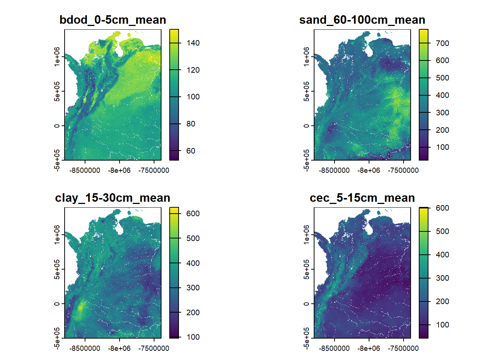

Este cuaderno realiza la validación de los datos de pedodiversidad de Rao, calculada a partir de polígonos de UCS, frente a la diversidad de Rao calculada a partir de propiedades de los suelos a diferentes profundidades, extraidas de SoilGrids. A continuación se presenta:
La carga de datos de pedodiversidad basada en polígonos
La carga de datos de SoilGrids
Cálculo de pedodiversidad raster según Rocchini et al.(2017, 2021)
Comparación de pedodiversidad espacializada
1. Carga de datos de pedodiversidad de UCS
Los datos producto del procesamiento de UCS, se descargan desde un repositorio abierto de Zenodo.
#Se crea una variable Qdens que expresa la densidad de Qucs_rao_sf <- ucs_rao_sf |> tidyr::drop_na(Q) |># se deja un mínimo diferente de cero para trabajar con logaritmos dplyr::mutate(Q =case_when(Q ==0~0.000001, TRUE~ Q),Qdens = Q/AREA_HA,log_Qdens =log(Qdens) ) head(ucs_rao_sf)
Se cargan los datos de valores promedio para varias propiedades. Los valores promedio es una de las estadístics reportadas en SoilGrids. Otras opciones son algunos quantiles o la incertidumbre.
bdod (Densidad aparente de la fracción fina del suelo): cg/cm³
cec (Capacidad de intercambio catiónico del suelo): mmol(c)/kg
cfvo (Fracción volumétrica de fragmentos gruesos (> 2 mm)): cm³/dm³
clay (Proporción de partículas de arcilla (< 0.002 mm) en la fracción fina): g/kg
nitrogen (Nitrógeno total (N)): cg/kg
phh2o (pH del suelo en agua): pH x10
sand (Proporción de partículas de arena (> 0.05/0.063 mm) en la fracción fina): g/kg
silt (Proporción de partículas de limo (≥ 0.002 mm y ≤ 0.05/0.063 mm) en la fracción fina): g/kg
soc (Contenido de carbono orgánico del suelo en la fracción fina):dg/kg
ocd (Densidad de carbono orgánico): hg/m³
ocs (Reservas de carbono orgánico): t/ha
# Crea un objeto tipo función al ejecutar un script externosource("00_funcion_carga_soilgrids.R")# Se llama la función con los argumentos adaptados al proyectostack_suelo <-descargar_soilgrids_stack(vars =c("bdod", "sand", "silt", "clay", "soc", "cec", "phh2o"),depths =c("0-5cm", "5-15cm", "15-30cm", "60-100cm"),stats =c("mean"),resolucion =c(250, 250),#define ruta de descarga y verifica si ya existen los archivosruta_vrt = here::here("Data", "OUT_SoilGrids_vrt") )
Installing package into 'C:/Users/cguio/AppData/Local/R/win-library/4.5'
(as 'lib' is unspecified)
Warning: unable to access index for repository http://www.stats.ox.ac.uk/pub/RWin/bin/windows/contrib/4.5:
cannot open URL 'http://www.stats.ox.ac.uk/pub/RWin/bin/windows/contrib/4.5/PACKAGES'
package 'gdalUtilities' successfully unpacked and MD5 sums checked
The downloaded binary packages are in
C:\Users\cguio\AppData\Local\Temp\Rtmp0sxcF8\downloaded_packages
gdalUtilities installed
Warning in descargar_soilgrids_stack(vars = c("bdod", "sand", "silt", "clay", : El sistema de referencia de coordenadas (CRS) por defecto es Homosínclico Mundial (EPSG:54052).
El bounding box proporcionado está en metros sobre este CRS.
Si se desea trabajar en EPSG:4326 u otro CRS geográfico, reproyectar después con `terra::project()`.
Procesando: bdod_0-5cm_mean
Usando VRT existente: M:/My Drive/02_PROYECTOS/PROYECTOS MIXTOS/PROPUESTAS INVESTIGACION/2025_UNALAG/DESARROLLO/PROYECTO DE CODIGO/pedodiv-colombia/Data/OUT_SoilGrids_vrt/bdod_0-5cm_mean.vrt
Procesando: bdod_5-15cm_mean
Usando VRT existente: M:/My Drive/02_PROYECTOS/PROYECTOS MIXTOS/PROPUESTAS INVESTIGACION/2025_UNALAG/DESARROLLO/PROYECTO DE CODIGO/pedodiv-colombia/Data/OUT_SoilGrids_vrt/bdod_5-15cm_mean.vrt
Procesando: bdod_15-30cm_mean
Usando VRT existente: M:/My Drive/02_PROYECTOS/PROYECTOS MIXTOS/PROPUESTAS INVESTIGACION/2025_UNALAG/DESARROLLO/PROYECTO DE CODIGO/pedodiv-colombia/Data/OUT_SoilGrids_vrt/bdod_15-30cm_mean.vrt
Procesando: bdod_60-100cm_mean
Usando VRT existente: M:/My Drive/02_PROYECTOS/PROYECTOS MIXTOS/PROPUESTAS INVESTIGACION/2025_UNALAG/DESARROLLO/PROYECTO DE CODIGO/pedodiv-colombia/Data/OUT_SoilGrids_vrt/bdod_60-100cm_mean.vrt
Procesando: sand_0-5cm_mean
Usando VRT existente: M:/My Drive/02_PROYECTOS/PROYECTOS MIXTOS/PROPUESTAS INVESTIGACION/2025_UNALAG/DESARROLLO/PROYECTO DE CODIGO/pedodiv-colombia/Data/OUT_SoilGrids_vrt/sand_0-5cm_mean.vrt
Procesando: sand_5-15cm_mean
Usando VRT existente: M:/My Drive/02_PROYECTOS/PROYECTOS MIXTOS/PROPUESTAS INVESTIGACION/2025_UNALAG/DESARROLLO/PROYECTO DE CODIGO/pedodiv-colombia/Data/OUT_SoilGrids_vrt/sand_5-15cm_mean.vrt
Procesando: sand_15-30cm_mean
Usando VRT existente: M:/My Drive/02_PROYECTOS/PROYECTOS MIXTOS/PROPUESTAS INVESTIGACION/2025_UNALAG/DESARROLLO/PROYECTO DE CODIGO/pedodiv-colombia/Data/OUT_SoilGrids_vrt/sand_15-30cm_mean.vrt
Procesando: sand_60-100cm_mean
Usando VRT existente: M:/My Drive/02_PROYECTOS/PROYECTOS MIXTOS/PROPUESTAS INVESTIGACION/2025_UNALAG/DESARROLLO/PROYECTO DE CODIGO/pedodiv-colombia/Data/OUT_SoilGrids_vrt/sand_60-100cm_mean.vrt
Procesando: silt_0-5cm_mean
Usando VRT existente: M:/My Drive/02_PROYECTOS/PROYECTOS MIXTOS/PROPUESTAS INVESTIGACION/2025_UNALAG/DESARROLLO/PROYECTO DE CODIGO/pedodiv-colombia/Data/OUT_SoilGrids_vrt/silt_0-5cm_mean.vrt
Procesando: silt_5-15cm_mean
Usando VRT existente: M:/My Drive/02_PROYECTOS/PROYECTOS MIXTOS/PROPUESTAS INVESTIGACION/2025_UNALAG/DESARROLLO/PROYECTO DE CODIGO/pedodiv-colombia/Data/OUT_SoilGrids_vrt/silt_5-15cm_mean.vrt
Procesando: silt_15-30cm_mean
Usando VRT existente: M:/My Drive/02_PROYECTOS/PROYECTOS MIXTOS/PROPUESTAS INVESTIGACION/2025_UNALAG/DESARROLLO/PROYECTO DE CODIGO/pedodiv-colombia/Data/OUT_SoilGrids_vrt/silt_15-30cm_mean.vrt
Procesando: silt_60-100cm_mean
Usando VRT existente: M:/My Drive/02_PROYECTOS/PROYECTOS MIXTOS/PROPUESTAS INVESTIGACION/2025_UNALAG/DESARROLLO/PROYECTO DE CODIGO/pedodiv-colombia/Data/OUT_SoilGrids_vrt/silt_60-100cm_mean.vrt
Procesando: clay_0-5cm_mean
Usando VRT existente: M:/My Drive/02_PROYECTOS/PROYECTOS MIXTOS/PROPUESTAS INVESTIGACION/2025_UNALAG/DESARROLLO/PROYECTO DE CODIGO/pedodiv-colombia/Data/OUT_SoilGrids_vrt/clay_0-5cm_mean.vrt
Procesando: clay_5-15cm_mean
Usando VRT existente: M:/My Drive/02_PROYECTOS/PROYECTOS MIXTOS/PROPUESTAS INVESTIGACION/2025_UNALAG/DESARROLLO/PROYECTO DE CODIGO/pedodiv-colombia/Data/OUT_SoilGrids_vrt/clay_5-15cm_mean.vrt
Procesando: clay_15-30cm_mean
Usando VRT existente: M:/My Drive/02_PROYECTOS/PROYECTOS MIXTOS/PROPUESTAS INVESTIGACION/2025_UNALAG/DESARROLLO/PROYECTO DE CODIGO/pedodiv-colombia/Data/OUT_SoilGrids_vrt/clay_15-30cm_mean.vrt
Procesando: clay_60-100cm_mean
Usando VRT existente: M:/My Drive/02_PROYECTOS/PROYECTOS MIXTOS/PROPUESTAS INVESTIGACION/2025_UNALAG/DESARROLLO/PROYECTO DE CODIGO/pedodiv-colombia/Data/OUT_SoilGrids_vrt/clay_60-100cm_mean.vrt
Procesando: soc_0-5cm_mean
Usando VRT existente: M:/My Drive/02_PROYECTOS/PROYECTOS MIXTOS/PROPUESTAS INVESTIGACION/2025_UNALAG/DESARROLLO/PROYECTO DE CODIGO/pedodiv-colombia/Data/OUT_SoilGrids_vrt/soc_0-5cm_mean.vrt
Procesando: soc_5-15cm_mean
Usando VRT existente: M:/My Drive/02_PROYECTOS/PROYECTOS MIXTOS/PROPUESTAS INVESTIGACION/2025_UNALAG/DESARROLLO/PROYECTO DE CODIGO/pedodiv-colombia/Data/OUT_SoilGrids_vrt/soc_5-15cm_mean.vrt
Procesando: soc_15-30cm_mean
Usando VRT existente: M:/My Drive/02_PROYECTOS/PROYECTOS MIXTOS/PROPUESTAS INVESTIGACION/2025_UNALAG/DESARROLLO/PROYECTO DE CODIGO/pedodiv-colombia/Data/OUT_SoilGrids_vrt/soc_15-30cm_mean.vrt
Procesando: soc_60-100cm_mean
Usando VRT existente: M:/My Drive/02_PROYECTOS/PROYECTOS MIXTOS/PROPUESTAS INVESTIGACION/2025_UNALAG/DESARROLLO/PROYECTO DE CODIGO/pedodiv-colombia/Data/OUT_SoilGrids_vrt/soc_60-100cm_mean.vrt
Procesando: cec_0-5cm_mean
Usando VRT existente: M:/My Drive/02_PROYECTOS/PROYECTOS MIXTOS/PROPUESTAS INVESTIGACION/2025_UNALAG/DESARROLLO/PROYECTO DE CODIGO/pedodiv-colombia/Data/OUT_SoilGrids_vrt/cec_0-5cm_mean.vrt
Procesando: cec_5-15cm_mean
Usando VRT existente: M:/My Drive/02_PROYECTOS/PROYECTOS MIXTOS/PROPUESTAS INVESTIGACION/2025_UNALAG/DESARROLLO/PROYECTO DE CODIGO/pedodiv-colombia/Data/OUT_SoilGrids_vrt/cec_5-15cm_mean.vrt
Procesando: cec_15-30cm_mean
Usando VRT existente: M:/My Drive/02_PROYECTOS/PROYECTOS MIXTOS/PROPUESTAS INVESTIGACION/2025_UNALAG/DESARROLLO/PROYECTO DE CODIGO/pedodiv-colombia/Data/OUT_SoilGrids_vrt/cec_15-30cm_mean.vrt
Procesando: cec_60-100cm_mean
Usando VRT existente: M:/My Drive/02_PROYECTOS/PROYECTOS MIXTOS/PROPUESTAS INVESTIGACION/2025_UNALAG/DESARROLLO/PROYECTO DE CODIGO/pedodiv-colombia/Data/OUT_SoilGrids_vrt/cec_60-100cm_mean.vrt
Procesando: phh2o_0-5cm_mean
Usando VRT existente: M:/My Drive/02_PROYECTOS/PROYECTOS MIXTOS/PROPUESTAS INVESTIGACION/2025_UNALAG/DESARROLLO/PROYECTO DE CODIGO/pedodiv-colombia/Data/OUT_SoilGrids_vrt/phh2o_0-5cm_mean.vrt
Procesando: phh2o_5-15cm_mean
Usando VRT existente: M:/My Drive/02_PROYECTOS/PROYECTOS MIXTOS/PROPUESTAS INVESTIGACION/2025_UNALAG/DESARROLLO/PROYECTO DE CODIGO/pedodiv-colombia/Data/OUT_SoilGrids_vrt/phh2o_5-15cm_mean.vrt
Procesando: phh2o_15-30cm_mean
Usando VRT existente: M:/My Drive/02_PROYECTOS/PROYECTOS MIXTOS/PROPUESTAS INVESTIGACION/2025_UNALAG/DESARROLLO/PROYECTO DE CODIGO/pedodiv-colombia/Data/OUT_SoilGrids_vrt/phh2o_15-30cm_mean.vrt
Procesando: phh2o_60-100cm_mean
Usando VRT existente: M:/My Drive/02_PROYECTOS/PROYECTOS MIXTOS/PROPUESTAS INVESTIGACION/2025_UNALAG/DESARROLLO/PROYECTO DE CODIGO/pedodiv-colombia/Data/OUT_SoilGrids_vrt/phh2o_60-100cm_mean.vrt
Se valida que los archivos se cargaron correctamente.
# Validación rápida: nombres y visualprint(names(stack_suelo))
# Selecciona algunas capas por número de índicestack_sub <- stack_suelo[[c(1, 8, 15, 22)]]# Grafica solo esas capas (en un mismo panel multi-cuadro)plot(stack_sub)

Se descargan los datos en formato .tif localmente. Esto se realiza únicamente si el archivo aún no existe. Estos datos no se reflejan en el repositorio remoto (se maneja con .gitignore), ya que por su tamaño tiene conflicto con large files de GitHub.
# Definir la ruta de salidaout_raster <-here("Data", "OUT_soilgrids_stack.tif")# Verificar si el archivo ya existe antes de escribirif (!file.exists(out_raster)) {writeRaster(stack_suelo, filename = out_raster, overwrite =TRUE)} else {message("El archivo ya existe, no se sobrescribirá.")}
El stack guardado localmente en formato .tif se lee, pues permite un procesamiento más rápido que a través de lectura de los archivos .vrt. Se armoniza el sistema de coordenadas de referencia de los datos de pedodiversidad de UCS y se estandarizan las unidades de las variables.
# Cargar el archivo .tif como un SpatRasterstack_suelo_tif <-rast(out_raster)#Se normalizan las bandasnormalize_band <-function(x) (x -mean(x, na.rm=TRUE)) /sd(x, na.rm=TRUE)stack_suelo_z <-app(stack_suelo_tif, normalize_band)